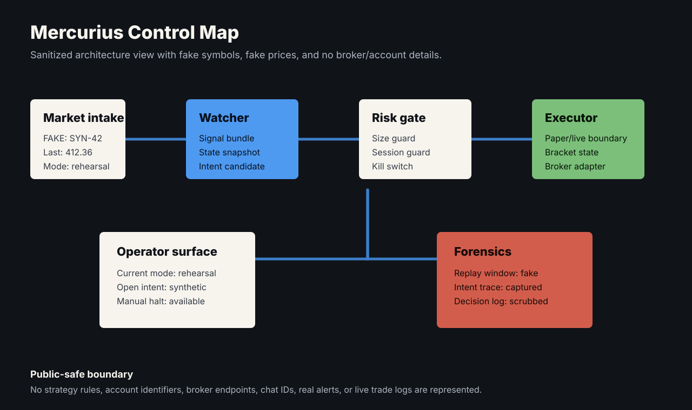
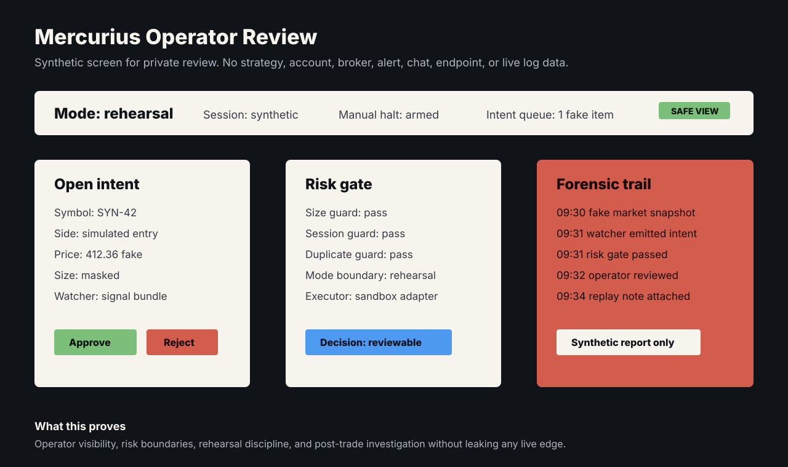
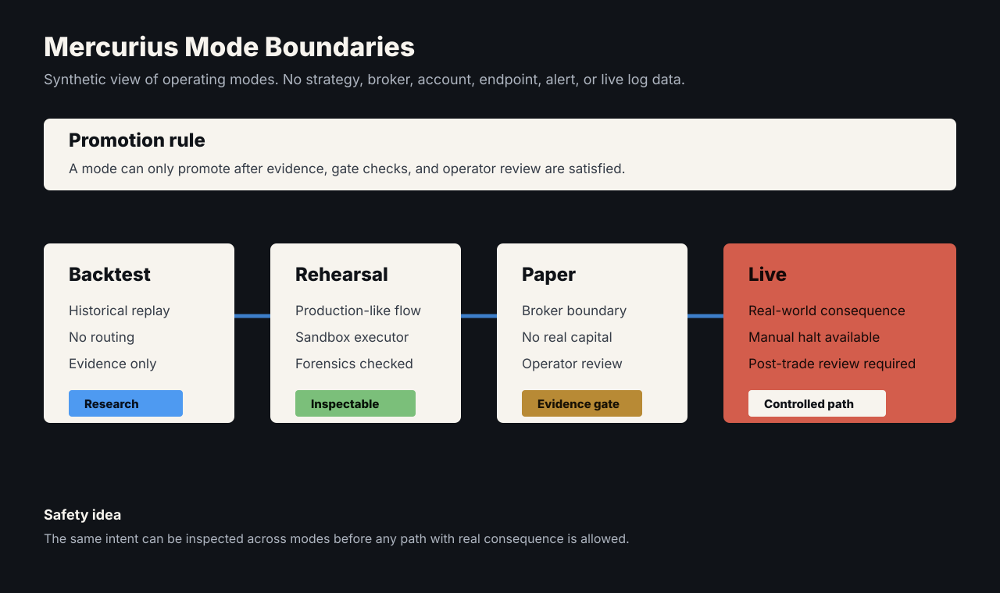

Problem
A serious trading system cannot be a script that places orders. It needs live data boundaries, risk controls, visible operator states, rehearsal paths, and a way to investigate what happened after a trade.
What I Built
I built Mercurius end to end: private futures trading infrastructure whose core is the backtesting engine. It is a hybrid TypeScript/Rust design — a pure, side-effect-free TypeScript reference implementation plus a native Rust accelerator that automated parity tests prove equivalent before the fast path is trusted. Backtests run against 502 trading days of tick data under a strict local-only, fail-loud data policy, and parameter sweeps run in parallel on the native path.
Around that engine sits the live system: market daemons, execution daemons, a control plane, watcher/executor contracts, risk guards, rehearsal workflows, operator routing, and post-trade forensics. The discipline is enforced, not aspirational: ~840 tests across the monorepo, a mandatory written safety-gate audit before any setup or execution change is called ready, idempotent restart recovery that reconciles internal state against reality, and WebSocket-based order placement instead of UI automation.
System Shape



Technical Decisions
- Prove the Rust accelerator equivalent to the TypeScript reference with automated parity tests before trusting it.
- Fail loud on missing data — local-only tick data, never a silent remote fetch.
- Separate watcher logic from execution behavior.
- Make rehearsal and backtest paths first-class workflows, gated by written safety audits.
- Expose operator state instead of hiding automation behind opaque processes.
- Treat forensics as a product surface, not as a folder of logs.
What This Proves
A two-person live trading operation runs on this infrastructure: ~108K lines across 6 apps and 5 shared packages, ~840 tests, a parity-tested native accelerator, and a written safety-gate audit before any change is called ready. Software where a bug costs real money, engineered accordingly.
Public Evidence
- Sanitized control map included.
- Fake-data operator dashboard represented in the control map.
- Mode indicator for backtest, rehearsal, paper, and live.
- Fake post-trade forensic report.
- Mode-boundary diagram included.
Privacy Boundary
Strategy logic, broker details, account identifiers, real alerts, live logs, and P/L stay private. Everything shown above is synthetic. The architecture, safety doctrine, and test discipline can be walked through live, on request.